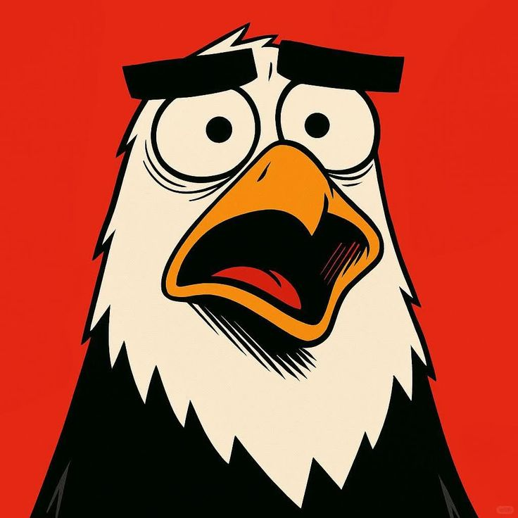

Kisah Elang di Atas Awan
Elang adalah burung pemangsa yang kuat. Mereka dikenal karena penglihatan yang tajam dan kemampuan terbang yang luar biasa. Elang sering dianggap sebagai simbol kekuatan dan kebebasan.

Peternakan Ayam di Pedesaan
Ayam adalah hewan ternak yang paling umum di dunia. Mereka dipelihara untuk daging dan telurnya. Di pedesaan, ayam sering dibiarkan berkeliaran bebas.

Hiu, Predator Laut yang Tangguh
Hiu adalah ikan bertulang rawan yang hidup di laut. Mereka dikenal sebagai predator puncak di lautan. Meskipun menakutkan, hiu memainkan peran penting dalam menjaga ekosistem laut.

Kehidupan Pinguin di Kutub Selatan
Pinguin adalah burung laut yang tidak bisa terbang. Mereka hidup di belahan bumi selatan dan sangat lincah di air. Pinguin hidup berkelompok untuk melindungi diri dari cuaca dingin dan predator.